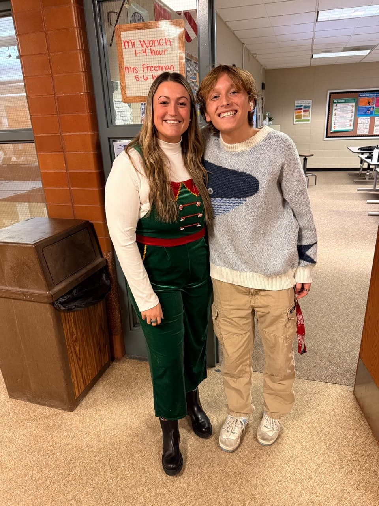

Funding Michigan TeachersStudent-led 501(c)(3) · Okemos, MI
Michigan teachers give everything. We give back.
Classroom supplies, staff meals and thank-yous at three mid-Michigan high schools.
fundingmichiganteachers.org

Classroom supplies, staff meals and thank-yous at three mid-Michigan high schools.